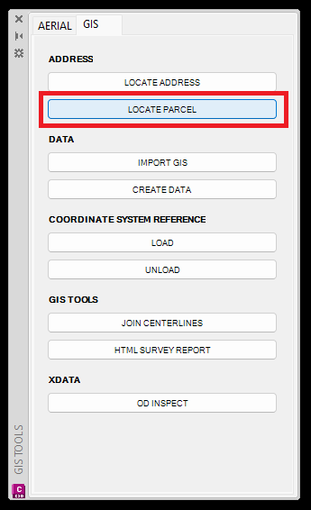
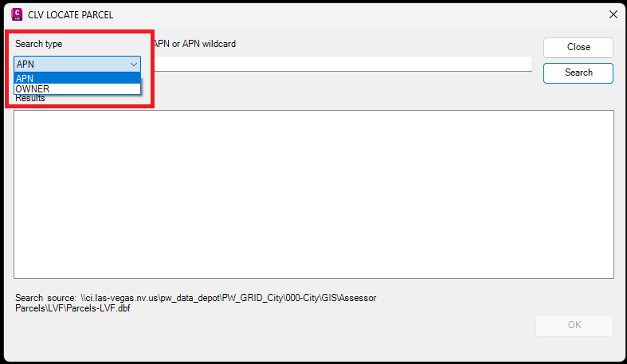
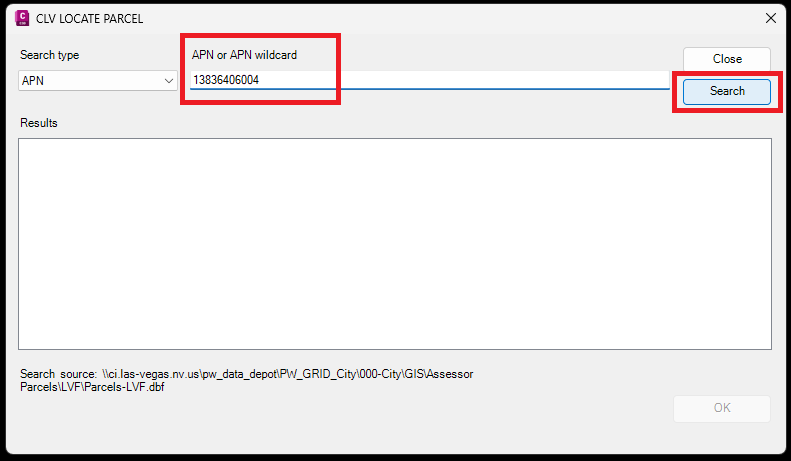
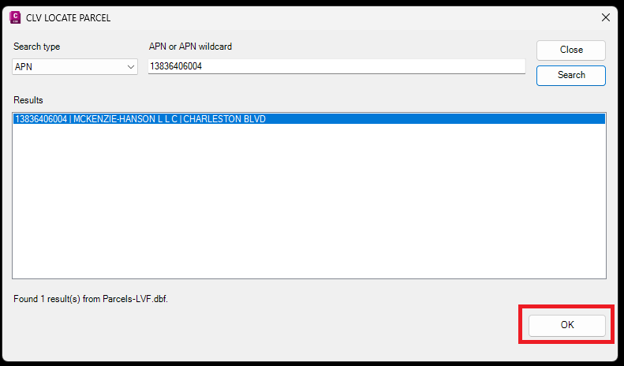
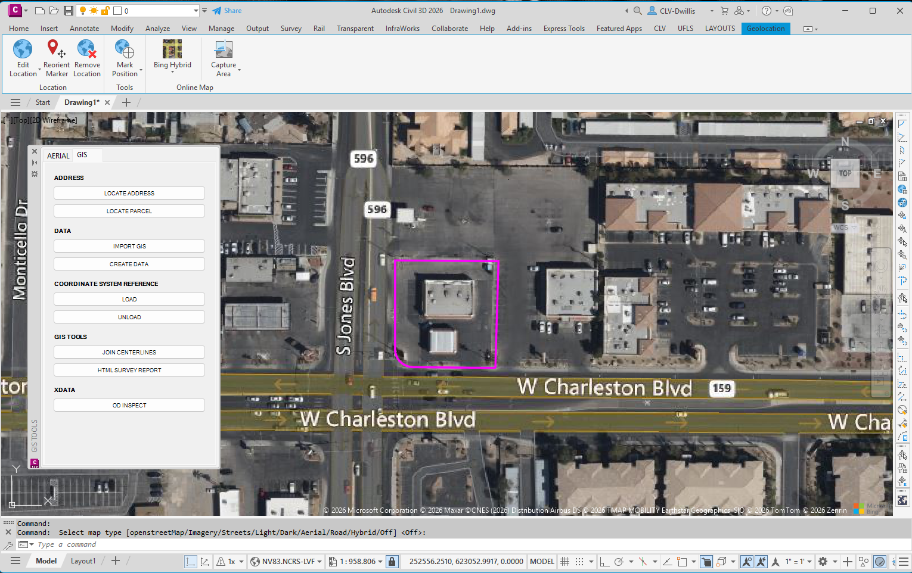

LOCATE PARCEL
Searches parcel records by APN or owner name, lets the user choose from the matching results, zooms to the parcel, highlights the property boundary, and turns on the map background for location review.
Result: The selected parcel is highlighted in magenta and the drawing zooms to the parcel location.
Basic Use
- Open the GIS tab and select LOCATE PARCEL.
- Choose whether to search by APN or OWNER.
- Enter the search value and click Search.
- Select the correct result and click OK.
- Review the highlighted parcel boundary in the drawing.





Notes
- For APN searches, the tool supports a full APN or an APN wildcard.
- Owner searches may return multiple results. Review the parcel number, owner name, and street information before clicking OK.
- If a map type prompt appears at the command line, press Enter to accept the default option shown, or choose the desired map background.